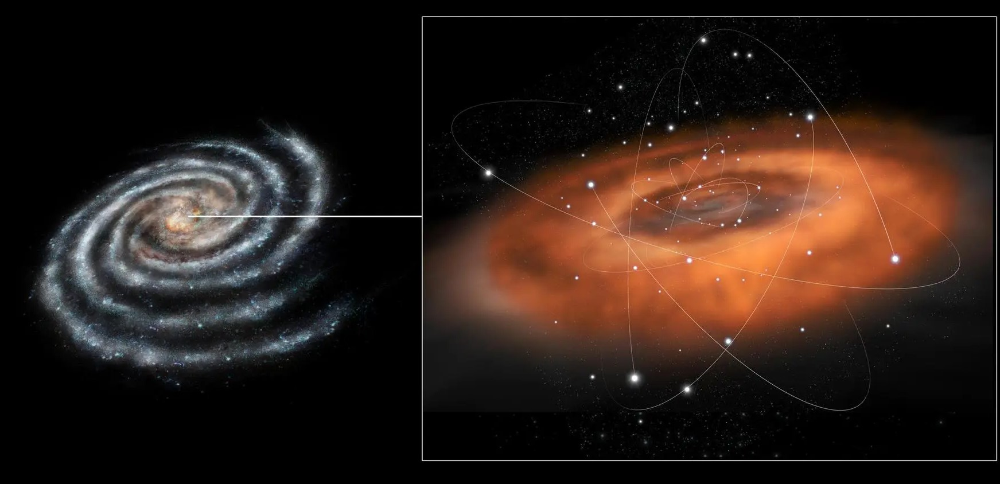
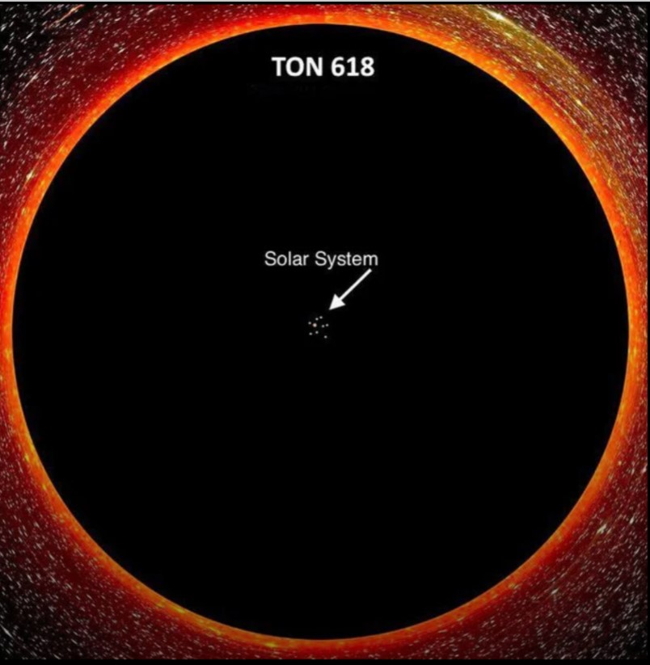
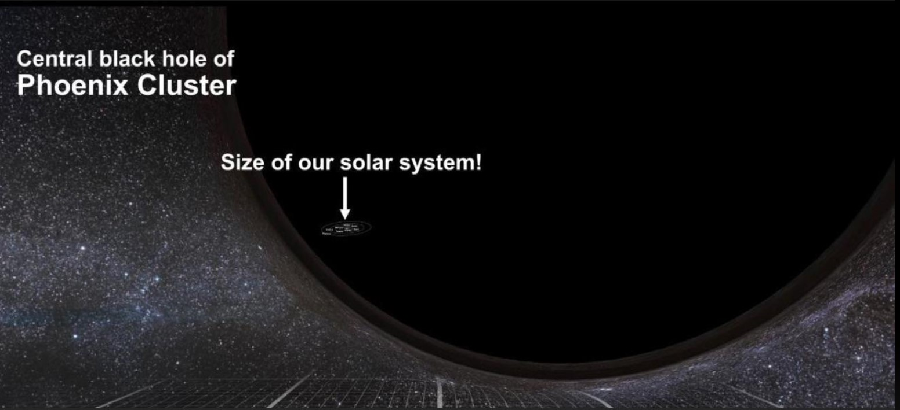

Стрелец A*
Масса: около 4.1 миллиона масс Солнца
Расположена в центре нашей галактики, Млечный Путь.
TON 618
Масса: около 66 миллиардов масс Солнца
Одна из самых массивных известных черных дыр.
Феникс А*
Масса: около 100 миллиардов масс Солнца
Расположена в кластере Феникс. Самая большая черная дыра в обозримой Вселенной.
А здесь можно увидеть список и других сверхмассивных черных дыр в обозримой Вселенной